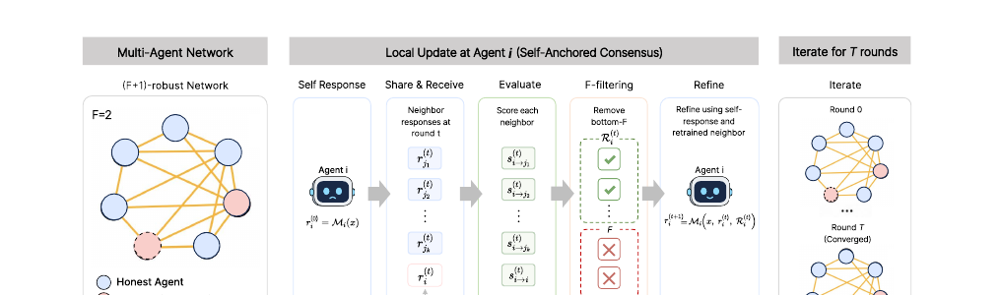

Building lightweight, fast, and reliable AI that can stand beside people when seconds matter.
Vincent-Daniel Yun · University of Southern California
Modern AI is powerful but heavy. State-of-the-art models are enormous and their inference is slow —
still far from human intuition, and far too slow and unreliable to trust in urgent, high-stakes moments.
Two obstacles stand between today's models and AI we can trust in the field. Individually, each model is too
large and too slow to run where it is actually needed. Collectively, when many models or agents work together,
a single faulty or adversarial member can quietly derail the whole system. E-AI attacks both
— making every model lightweight and fast, and keeping teams of agents reliable even when some of them fail.
I started the E-AI (Efficient-AI) project to build compact yet powerful AI that can assist
people in disaster scenarios — responding to dangerous accidents quickly and reliably when every second counts.
E-AI is the central theme of all my research — every project I work on is a step toward making it real.
Research under E-AI
The work splits into two threads: keeping teams of LLM agents robust when individual agents fail, and shrinking
and accelerating the models themselves — without losing what makes them powerful.
IRobust Multi-Agent Systems

01
Robust Multi-Agent LLMs under Byzantine Faults
When LLM agents collaborate over a network, a few unreliable or adversarial ("Byzantine") agents can mislead
the rest and corrupt the group's answer. Self-Anchored Consensus (SAC) is a fully decentralized
filter-and-refine protocol where agents iteratively share, evaluate, and filter each other's messages
— with graph conditions that guarantee honest agents keep reliable information flowing, even under
adversarial attacks.
Layer pruning removes whole Transformer blocks to shrink an LLM, but creates a mismatch at the pruning
boundary that hurts accuracy. Ghosted Layers is a training-free module that solves a closed-form
activation-alignment problem to recover the lost information — keeping the speedup of pruning
while restoring quality.
Where redundancy lives inside an LLM depends on its architecture — it can be localized or spread
globally (think Llama vs. Qwen). LoRP measures inter-layer similarity to compute a Representation
Locality Score, then prunes each model according to its own redundancy structure instead of a
one-size-fits-all rule.
Under aggressive sparsity, naive pruning destroys accuracy because important weights are spread thin.
WCR is a training-time regularizer that concentrates a model's energy onto a small set of informative
parameters, so magnitude pruning can safely remove the rest — making models far more robust to
high-sparsity compression.
Rethinking Layer Redundancy: Calibration over Search
Most depth-pruning methods chase clever search algorithms to find removable layers. We show the opposite:
under a fixed calibration set, complex search barely beats simple one-shot pruning — it is the
calibration configuration that really shapes which layers are redundant. A call to prioritize data
over search.
@article{lee2026robust,
title = {Robust Multi-Agent LLMs under Byzantine Faults},
author = {Lee, Haejoon and Yun, Vincent-Daniel and Oh, Hyeonho and Panagou, Dimitra and Karimireddy, Sai Praneeth},
journal = {arXiv preprint arXiv:2605.09076},
year = {2026}
}
Ghosted Layers
@article{yun2026ghosted,
title = {Ghosted Layers: Unconstrained Activation Alignment for Recovering Layer-Pruned LLMs},
author = {Yun, Vincent-Daniel and Jo, Junhyuk and Karimireddy, Sai Praneeth and Lee, Sunwoo},
journal = {arXiv preprint arXiv:2605.15491},
year = {2026}
}
Locality-Aware Redundancy Pruning (LoRP)
@article{yun2026lorp,
title = {Locality-Aware Redundancy Pruning for LLM Depth Compression},
author = {Yun, Vincent-Daniel and Kim, Youngrae and Lim, Woosang and Heo, Youngjin and Kim, Minkyu and Lee, Sunwoo},
journal = {arXiv preprint arXiv:2605.27786},
year = {2026}
}
Weight Concentration Regularization (WCR)
@article{yun2026wcr,
title = {Weight Concentration Regularization for Improving Pruning Robustness Under High Sparsity},
author = {Yun, Vincent-Daniel and Jo, Junhyuk and Lee, Sunwoo},
journal = {arXiv preprint arXiv:2511.14282},
year = {2026}
}
Rethinking Layer Redundancy
@article{kim2026rethinking,
title = {Rethinking Layer Redundancy: Calibration Matters More Than Search in LLM Depth Pruning},
author = {Kim, Minkyu and Yun, Vincent-Daniel and Kim, Youngrae and Cho, Suin and Lim, Woosang and Lee, Sunwoo},
journal = {arXiv preprint arXiv:2604.24938},
year = {2026}
}